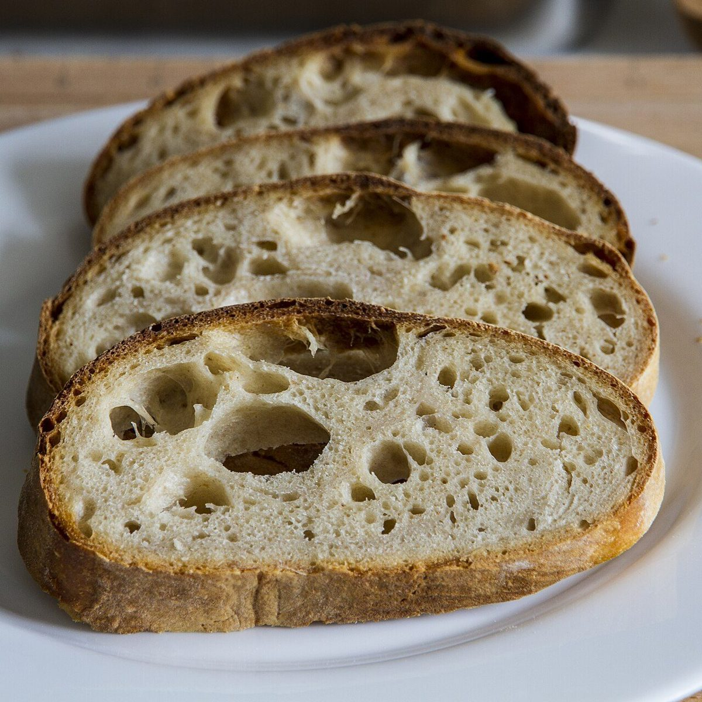

パン屋 / 長崎県佐世保市
cornetto23
長崎県佐世保市上柚木町にあるパン屋「cornetto23」のご案内ページです。営業時間やメニューなど詳しいことは準備中。まずはInstagramをのぞいてみてください。

制作側の連想
細い先から、広い口へ
cornettoという綴りは、イタリア語で「小さな角」などを意味する語だと聞いたことがあります。店名の由来は分かりません。制作側はそこから角笛やコーンのように、先が細く口へ向かって広がる形を連想し、このサイトはページが進むほど幅が広がる作りにしました。お店の理念・由来とは無関係の、制作側の連想です。
口径1
細い穂から


写真は国外・撮影地不明のフリー素材のイメージです。
口径2
少しずつ、広く



ご案内
お店のこと(確認できたものだけ)
| 所在地 | 〒857-0126 長崎県佐世保市上柚木町３２２２ |
|---|---|
| 電話 | 090-6755-5596 |
| 営業時間 | 準備中 |
| 定休日 | 準備中 |
| ご予約 | 準備中 |
| 駐車場 | 準備中 |
| SNS | Instagram @cornetto23_1021 |